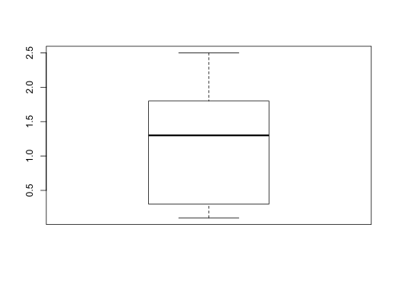
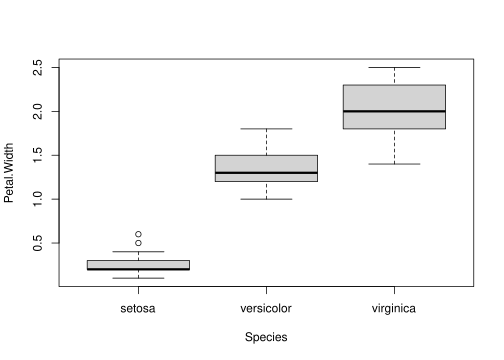
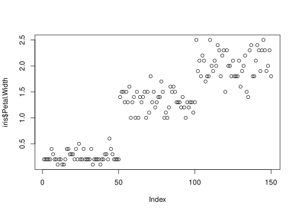
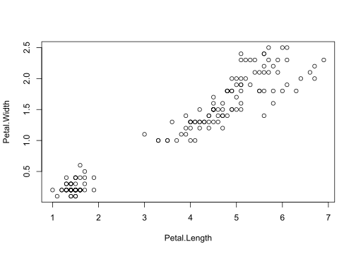

Look at your data!
Yes, that means look at your raw data by producing subsets, printing to the console, and all the other things we’ve been doing. But it also means that we should visualize our data.
The potential purposes for doing so are legion, but we can name a few for starters:
Before we continue, though, we should keep one thing in mind: data visualization is not about making pretty pictures. Saying so does not discount the importance of aesthetics in your visualizations. However, the aesthetics you employ should be chosen to make the message of the figure clear to your audience. In some cases, we might want to highlight a particular contrast between two variables. In others, we might want to visualize how a particular variable trends over time. In yet others, we may simply want to visualize features in our raw dataset.
Each of these objectives implies the usefulness of certain visualizations and the impropriety of others. In other words, we want the purpose of the visualization to dictate the means by which we display relevant data.
In this introduction, we will focus on a couple of broad concepts and code examples in order to get you up and running as quickly as possible. However, I highly recommend two (freely available) resources in particular:
Data Visualization: A Practical Introduction by Kieran Healy
Top 50 ggplot2 Visualizations - The Master List (with Full R Code) by Selva Prabhakaran
Keeping these bookmarked will probably cover about 90%4 Source: Thin air of your data visualization needs.
You may find that working with plotting in base R is more efficient when you want quick-and-dirty visualizations—for instance, while you’re conducting exploratory data analysis.



